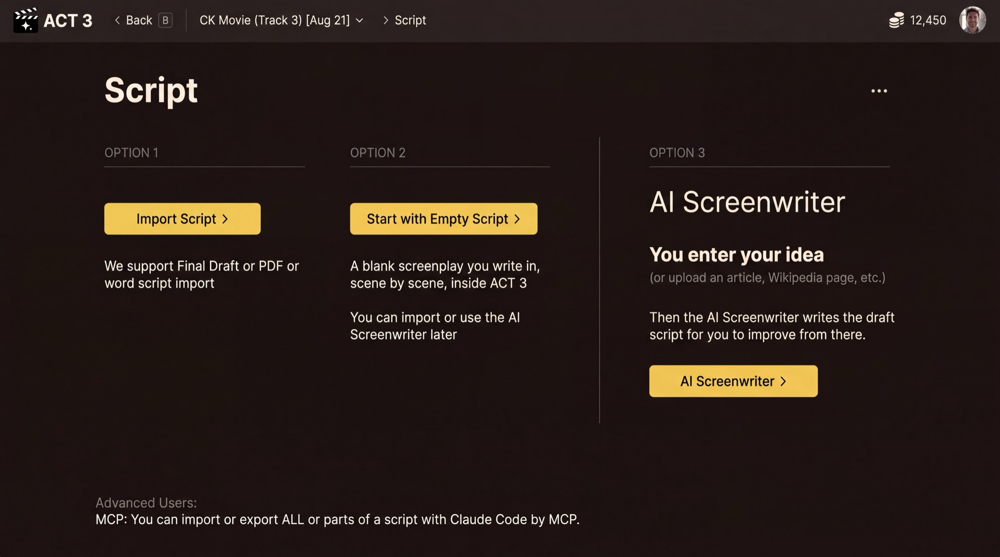

Step 1 of 8
Choose the AI Screenwriter
You have an idea, not a screenplay, so let the AI Screenwriter draft it. On the Script page, look at Option 3 on the right. Click AI Screenwriter ›.

Click AI Screenwriter ›The Script page: three ways to get a script. Option 3 is the AI Screenwriter.
Where you are
You started a new project from Home with Create new project and filled in Starting Info: the film's name, frame shape, type and organization (guide 1 walks through that). The next page, Script, asks where your script will come from.
Your decision: where the script comes from
- Import Script › when you already have a screenplay in Final Draft, PDF or Word. See guide 2.
- Start with Empty Script › when you want to write it yourself, scene by scene. See guide 3.
- AI Screenwriter › when you have an idea, an article or some notes, and want a draft script made from them. That is this guide.
Why the AI Screenwriter
The AI Screenwriter works the way a writer's room does. It turns your idea into a treatment, then acts, then beats, and only then writes the scenes. You can read and change each layer before the next one is built, so the draft that comes out is shaped by you.
Nothing is final. After the script is written you can still edit any line in the Editor, or ask the AI chat to change it.